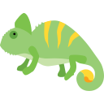

選取任意網頁文字，AI 立刻幫你翻譯、解釋、優化
點擊下方「前往設定」，至少設定一個 API Key 即可開始使用。
在任意網頁滑鼠選取文字，旁邊會出現懸浮工具列。
點擊 翻譯 解釋 優化 即可觸發。
AI 結果即時串流顯示，可拖曳移動、釘住保留。
按寶石 💎 按鈕可直接存入 Obsidian 週記。
存入 Obsidian 需要先裝 Advanced URI 插件，並在設定頁填 Vault 名稱。沒裝的話寶石鈕按下去不會寫進筆記。 只用翻譯／解釋／優化不需要這個。